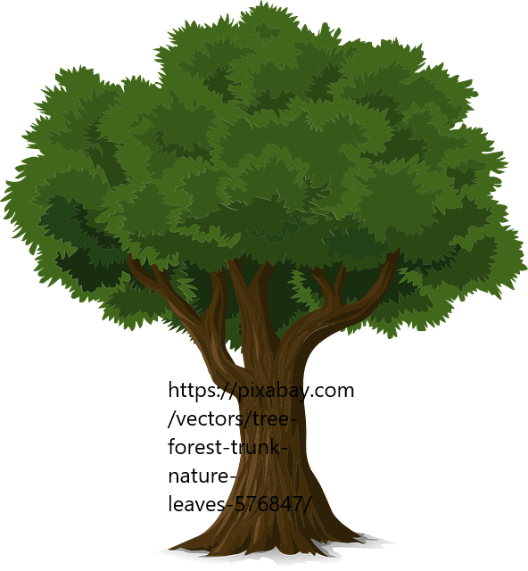
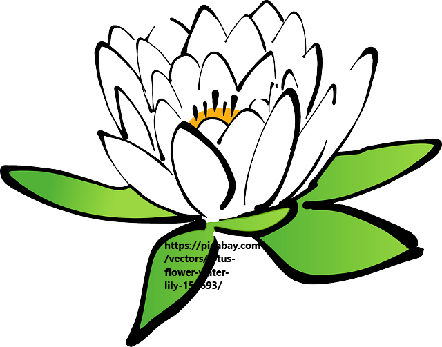
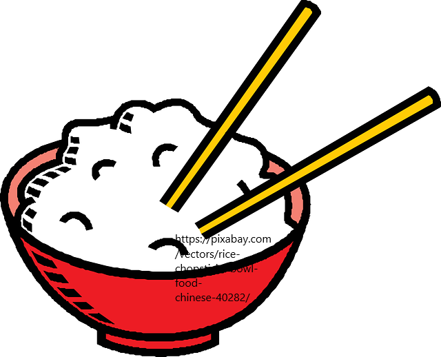
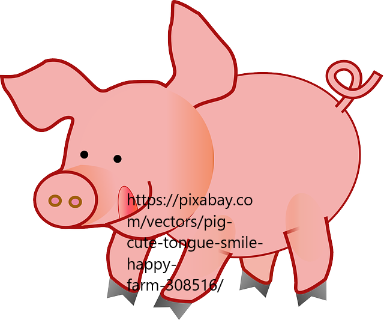

- 
- 
- 
- 
The most important things in the Mars is air. For people live in the outpost, air is more rare than jewelary. people and livestocks will use mass air every day.
It is impossible to use something like can food to bring air from earth. This put the need of producing air in the highest position.
To solve this problem, UN decide to hire a group to people to grow and take care of trees everyday. The environment on the Mars has some
similarity such as the heat in day and cold weather on night. So the base trees are haloxylon ammondendron, which can hold the
soil and this step had been finished in the last decade. Nowadays, there exist more than 15 kind trees and kinds of glass on the Mars outpost.Also, near 80% of
soil is coverd by vegetation. near 86% of air can be produced by the envirnoment, and the rest comes from water. The reason why we still need people
is that we want to improve this number to 97%
A strange envirnomen can easily make people feel stressful and lonely. Due to the limitation of room, we can only keep a small amount
of function rooms such as cinema, library and swimming poor. So we are searching for another way to help people reduce stress.
It is report that people liveing with flowers have less change to get mental illness. So, the managers decide to grow different
flowers in the private rooms and outdoor areas. livers in one room have right to choose the species of them. Also, flowers can be
grown with glass and trees, this will help the uss the land in outpost in best way.
Except the air, another necessary resource is food. Although people can get food from earth one time per month, workers in
outpost still want to get some fresh fruits and vegetable. This promote us to set more land for farm and also result the lack
of workers. Because the large difference between days and nights, fruits and vegetable can save suger more easily and less weight
environment makes vegetation largers than in earth. Because of the long term of the producting paddy and wheat, we will not grow them
in the outpost and all of rice and flour come from earth.
It is unhealthy for people to only eat brawn. To slove this, we set up animal husbandry on the Mars. We can produce
prok, beef, chicken, lamb and fish today and will set more kind of production of meat on the Mars although everyone have
a limited volume per week. This is because we do not have enough land and food to feed more animals. However, this situation can
be changed with the time went by. We decide to expend our outpost this year and i think people can have more meat after the
construction which may last 3 to 5 years.